<ion-view>
	<ion-nav-bar class="bar-stable inside_header" ng-controller="loginController">
		<div id="header_wrap">
			
			<div class="xp_wrapper">
		      <p class="xp">XP</p>
		      <div class="loader_wrap">
		         <div class="fill" data-xp="33%">
		            <p>132<span>pts</span></p>
		         </div>
		      </div>
		      <p class="grade">Lieutenant Premiere Classe</p>
		   </div>
		   <a class="logout" ng-click="logoutFunc()" href="#"></a>
		</div>
	</ion-nav-bar>


    <ion-content scroll="false" ng-controller="MapController">
        <!-- <div class=" test ion-ios-plus-outline"></div> -->
        <leaflet defaults="mapDefaults" center="mapCenter" markers="mapMarkers" data-tap-disabled="true" height="100%" geojson="geojson" maxbounds="maxbounds"></leaflet>
    </ion-content>
</ion-view>

